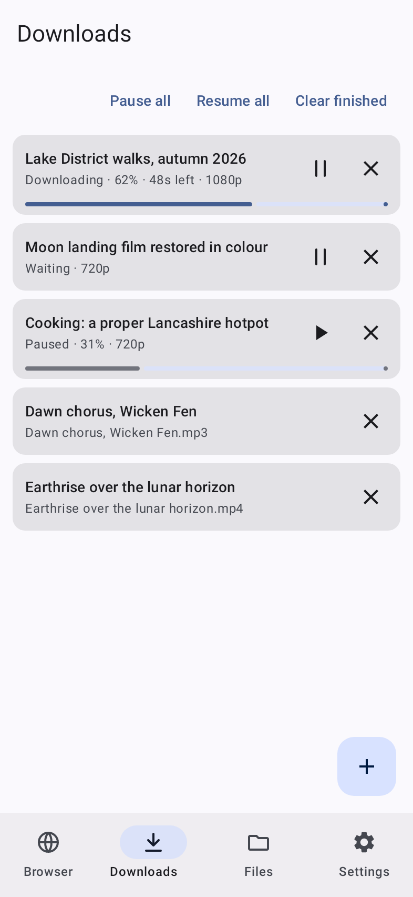
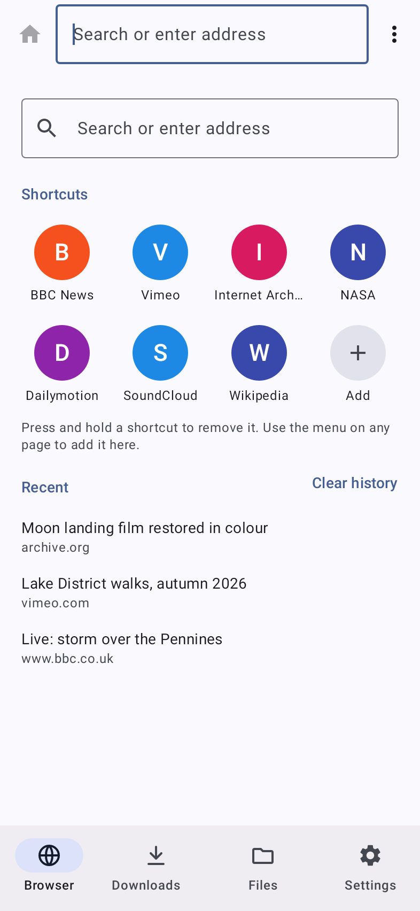
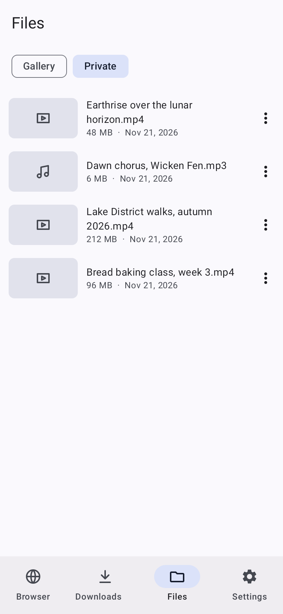
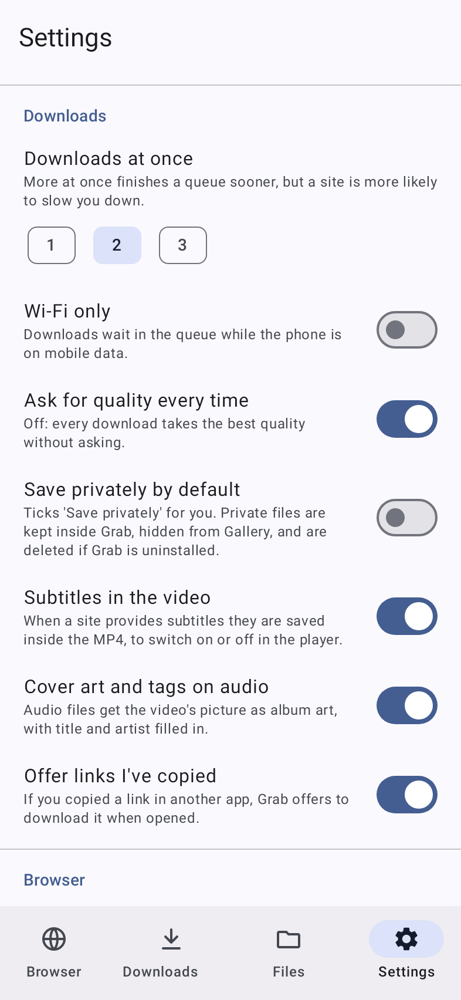
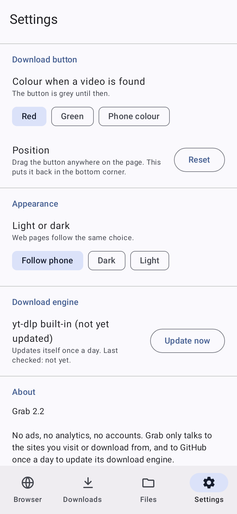

Save the video, skip the adverts
Grab is a web browser for Android that saves videos and sound from the pages you visit. Open the page, tap the round Download button, pick a size and carry on browsing while it saves.
It is free and open source, with no adverts and nothing to unlock. Files go straight to your phone, and Grab has no servers of its own.
Grab downloads things other people own. What the law says
- Version 2.2
- Android 10 or later, 64-bit
- 82 MB
Free, with nothing to unlock. No adverts, no account with the developer, no tracking. Compare or read the release notes.
Chrome may say the file might be harmful. It shows this for app files that do not come from Google Play. Choose Download anyway.

- No advertsNone in the app, and it blocks them on pages.
- No accountNothing to sign up for.
- Open sourceThe code for each version is published.
- Straight to your phoneGrab has no servers.
A look inside
These are the real screens, drawn from the app's own code with made-up downloads. Swipe or scroll sideways to see them all.




How it works
Grab is a browser with a download engine built in. There is nothing to buy and no account to make.
Open the page
Search or type an address on Grab's home page, tap a shortcut, or share a link to Grab from another app.
Tap Download
The round button turns red when Grab finds a video on the page. Tap it, pick a size from the grid, or choose sound only as M4A or MP3.
Carry on
Up to three downloads run at once while you keep browsing. Finished files go to your gallery and music apps, or stay private inside Grab.
Everything is in, and all of it is free
Nothing below is held back for a paid tier, because there is no paid tier.
Downloading
- Pick the size
- A grid of every resolution the site offers, with the file size where the site gives one.
- Sound only
- Save just the audio, as M4A or MP3, with a cover picture, title and artist.
- Just a section
- Give a start and an end time to save part of a video.
- Start later, pause and resume
- Set a time to start, pause one download or all of them, and a Wi-Fi only switch.
Browsing
- Adverts stopped
- A built-in blocker stops adverts and pop-ups, and video adverts are cut out before the player lines them up.
- A home page
- Search, shortcut tiles for the sites you use most, and your recent pages.
- Private mode
- Separate logins, no history, and everything wiped when you leave it.
- Copied links
- Open Grab after copying a link elsewhere and it offers to save it.
Your files
- Gallery or private
- Videos go to Movies/Grab and sound to Music/Grab, or keep a file privately inside Grab.
- Rename
- Choose a name before it downloads, or rename it later in Files.
- A built-in player
- Speed and subtitle controls, swipe to seek, and it carries on where you stopped.
- Subtitles
- Saved inside the video when the site has them.
Keeping up
- A fresh engine every day
- Sites change often, so Grab fetches the newest download engine once a day.
- Open source
- Grab's code for each version is published under GPL-3.0 on its release.
- No servers
- Pages load straight from the sites you visit and files are saved straight to your phone.
What you watch is your business
No servers
Grab has no servers of its own. The developer never sees what you browse or save.
No adverts, no tracking
There is no advertising, analytics or tracking, in the app or on this site.
Private when you want it
Private mode keeps no history and wipes its logins when you leave it.
Use it within the law
Grab can save videos and sound that belong to other people. Download only what you have the right to keep: your own uploads, things offered for download or under an open licence, or where the law allows a copy for yourself. Many sites' terms do not allow downloading, and keeping to them is up to you.
- Copyright, Designs and Patents Act 1988. Copying, sharing or showing a video or recording without the owner's permission can infringe copyright. Selling or sharing copies can be a criminal offence.
- Copyright, Designs and Patents Act 1988, sections 296ZA to 296ZF. Getting round copy protection (DRM) is against the law. Grab does not remove DRM and cannot save protected films and programmes.
- UK GDPR and the Data Protection Act 2018. A video of a person is their personal data. Sharing it on can break data protection law.
- The terms of the sites you use. Many sites set their own rules on downloading. Breaking them can get your account closed.
Laws differ in other countries. If you are not in the UK, the rules where you are apply. Read the terms of use.
Installing and updating
Grab is not on Google Play, so your phone asks a couple of extra questions the first time.
Download the app file
Tap Download on your phone. The file is called Grab.apk and is about 82 MB. If Chrome says the file might be harmful, choose Download anyway. First tick the box to say you will use the app within the law.
Allow the install
Open the file. The first time, Android asks you to allow your browser to install apps. Allow it, go back and tap Install. If Google Play Protect steps in, choose More details, then Install anyway.
Updating later
Grab tells you when a newer version is out. Install the new file over the old one and everything you have saved is kept.
Version 2.2, released 21 November 2026. See the release notes, or check your download.
Questions
Is Grab really free?
Yes. There is no paid version, no subscription and no adverts, and nothing in the app is locked. It is also open source. See the comparison.
Is Grab on Google Play?
No. Grab is a personal project and is downloaded from this site as an Android app file. It needs Android 10 or later on a 64-bit phone, which covers almost every phone sold in recent years.
Which sites does it work with?
Grab uses yt-dlp, an open-source download engine that recognises well over a thousand video and audio sites. On a site the engine does not know, Grab offers the stream the page itself was playing. Sites change often, so Grab fetches the newest engine once a day.
Why will some videos not download?
Films and programmes on services such as Netflix, Disney+ and Prime Video are locked with copy protection (DRM). Grab does not remove DRM and cannot save them. Now and then a site changes in a way that stops downloads until the engine catches up, which the daily update usually puts right.
Am I allowed to download a video?
That depends on the video and the site. Download only what you have the right to keep: your own uploads, videos offered for download or under an open licence, or where the law where you live allows a copy for yourself. Many sites' terms do not allow downloading, and keeping to them is up to you. The detail is in the terms.
Does Grab see what I watch or save?
No. Grab has no servers. Pages load straight from the sites you visit, and files are saved straight to your phone.
Do I need an account?
No. If a video is only shown to people who are signed in to its site, sign in on that site in Grab's browser. Grab tries the download without your login first and uses it only if that fails.
Where do the files go?
Videos go to Movies/Grab and sound to Music/Grab, where your gallery and music apps can see them. Files you save privately stay inside Grab, hidden from other apps, and are deleted if you uninstall it.
Why is the download so large?
The file is about 82 MB because Grab carries its whole download engine with it: yt-dlp, the Python it runs on, and FFmpeg for joining and converting files.
How do I update Grab?
Download the latest version from this site and install it over the one you have. Your downloads, queue, shortcuts and settings are kept.
Save it once, watch it anywhere
Free, with no adverts and nothing to unlock. Made by the developer of several other free Android apps: see them all.